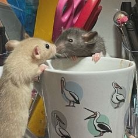

Szop (Procyon) - rodzaj ssaków z rodziny szopowatych (Procyonidae).

A TU SZCZURY AKURAT
Szczur[12], seramoszczur[12] (Rattus) – rodzaj ssaków z podrodziny myszy (Murinae) w obrębie rodziny myszowatych (Muridae), obejmujący kilkadziesiąt gatunków. Do najbardziej rozpowszechnionych należą, występujące również w Polsce, szczur śniady i szczur wędrowny, a także występujący w południowo-wschodniej Azji i na wyspach Pacyfiku szczur polinezyjski.